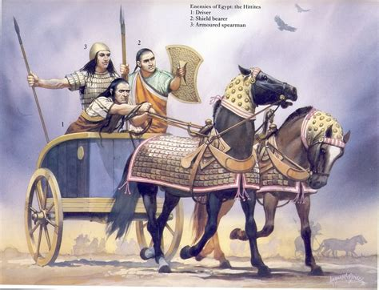
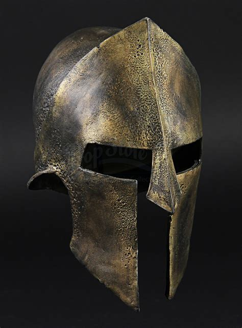
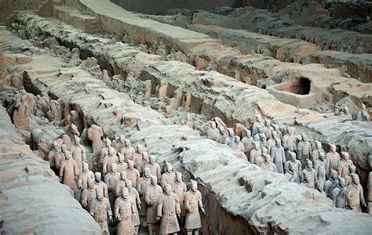
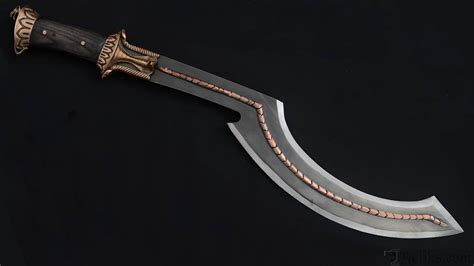

The Assyrian battering ram was a huge weapon on wheels. It had armor on it to keep soldiers safe. They rolled it up to city walls and hit the wall over and over until it cracked or fell.
Exhibit Introduction
This exhibit shows five military artifacts from ancient cultures. Each one helped people fight, protect cities, or show power.
Battering Ram (Assyrian) 1 Mesopotamia

Hittite Chariot 2 Anatolia

The Hittite chariot was fast and used in battle. Three people rode in it. One drove, one used a spear, and one shot arrows. This made the chariot good for quick attacks.
Spartan Helmet 3 Greece

The Spartan helmet was made of bronze and covered almost the whole face. It only had small slits for the eyes and mouth. It protected soldiers and also made them look scary to enemies.
Terracotta Army Soldier (China) 4 China

These soldiers were made from clay and were life size. They were buried with the Qin emperor to protect him after death. There were thousands of them, like a real army underground.
Egyptian Khopesh Sword 5 Ancient Egypt

The khopesh was a long sword with a curved hook shape. Warriors used it to pull enemies closer or knock away weapons. It was a strong and famous sword in Egypt.